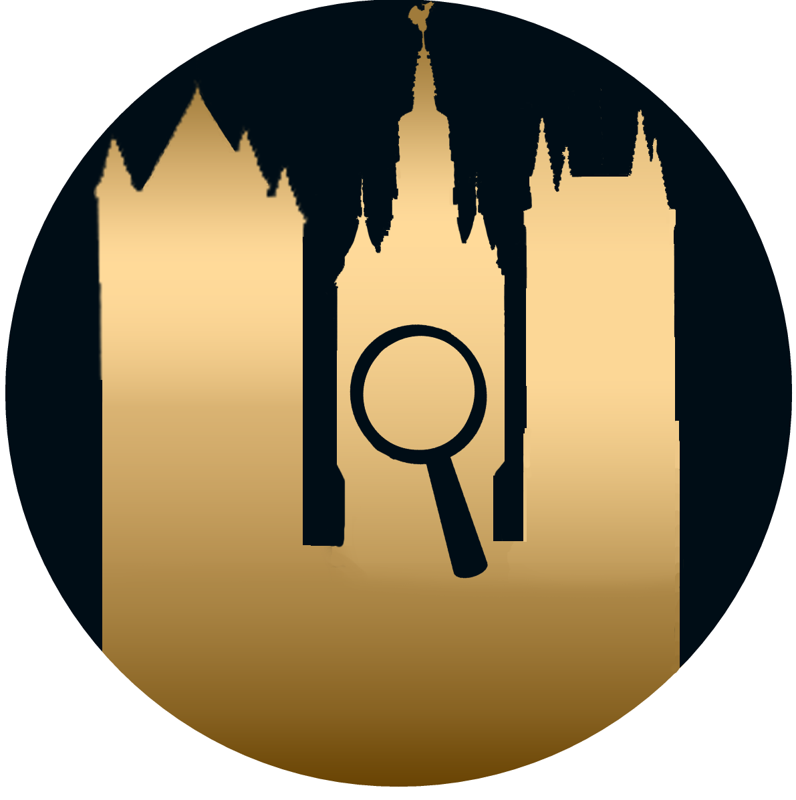

Ghent discovery
.jpg)
.jpg)
.jpg)
Wat is Ghent discovery?
Welkom bij “Ghent discovery”.
Heeft Gent geen geheimen voor jullie? Met deze app kan je het daadwerkerlijk bewijzen. Verzamel een groep vrienden en los de volgende raadsels op. Elk raadsel zal jullie naar een nieuwe locatie leiden.
Hoe snel kunnen jullie de raadsels oplossen?
Jullie zullen een raadsel krijgen die jullie naar een plaats leidt indien jullie in de omgeving van deze plaats zijn zullen jullie een nieuw raadsel krijgen die jullie weer naar ergens anders zal sturen. Er zijn 11 raadsels die jullie naar 11 verschillende plaatsen stuurt. Hulp vragen mag aan alles en iedereen met uitzondering van het internet.
Welkom bij “Ghent city riddles”.
Denken jullie dat je Gent van binnen en buiten kent? Met deze app kan je het daadwerkerlijk bewijzen. Verzamel een groep vrienden en los de volgende raadsels op. Elk raadsel zal jullie naar een nieuwe lokatie leiden.
Hoe snel kunnen jullie de raadsels oplossen?
Jullie zullen een raadsel krijgen die jullie naar een plaats leidt indien jullie in de omgeving van deze plaats zijn zullen jullie een nieuw raadsel krijgen die jullie weer naar ergens anders zal sturen. Er zijn 11 raadsels die jullie naar 11 verschillende plaatsen stuurt. Hulp vragen mag aan alles en iedereen met uitzondering van het internet.